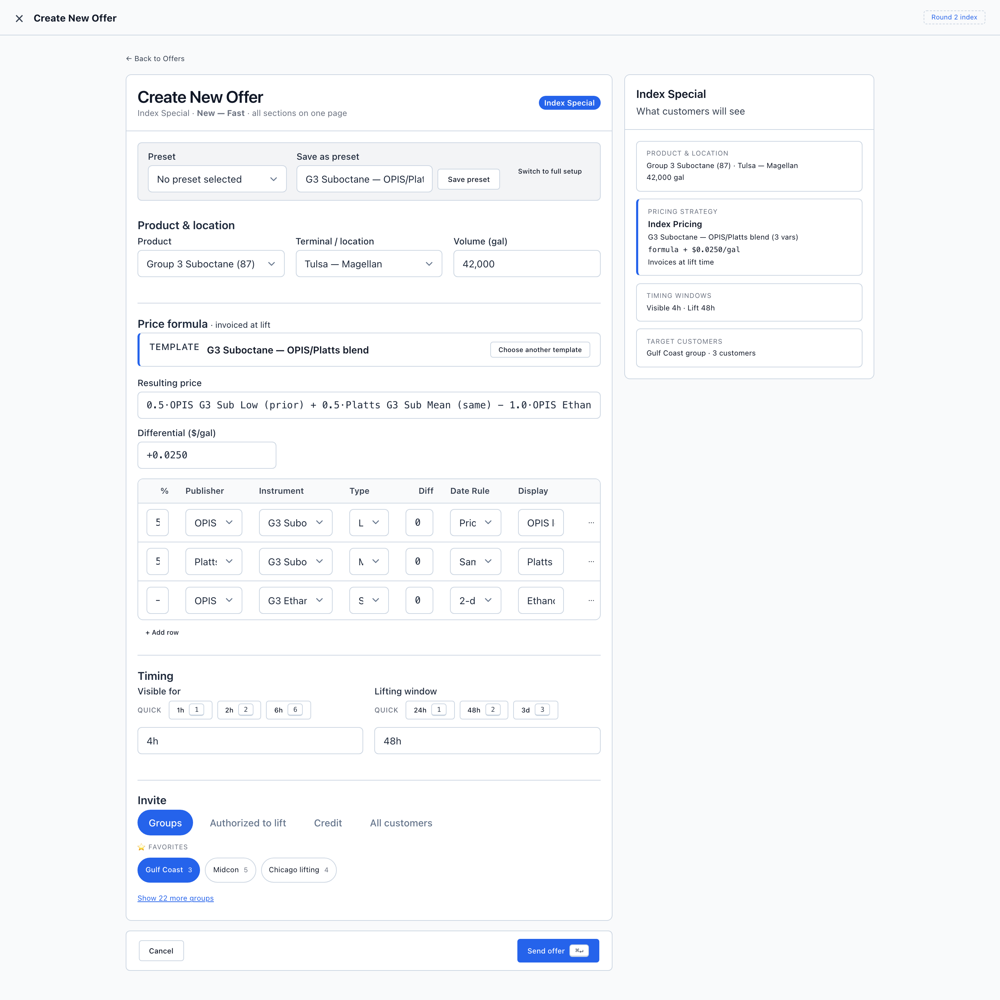
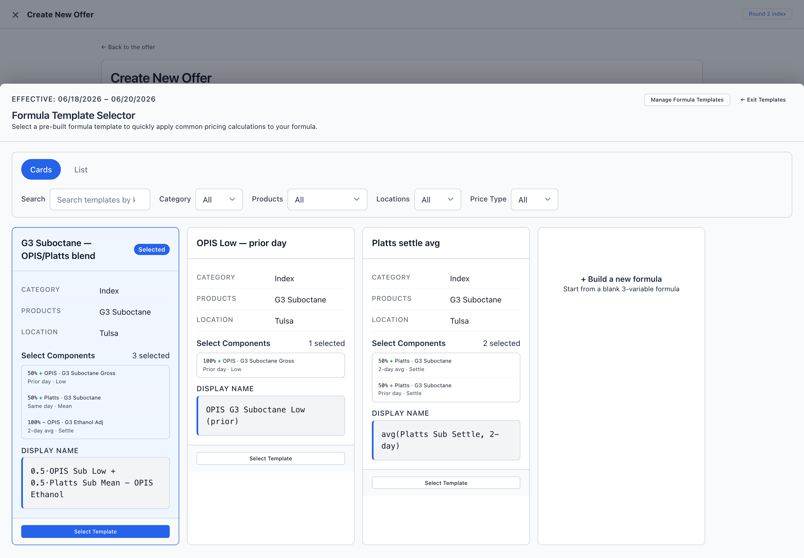

Impeccable UX Audit · Index Special Offers · Lo-fi Round 2
A read-only critique of the fast create flow (launchpad → create page → formula picker), measured against this round's own brief and the kickoff goal of ~10–12 clicks in ≤30 seconds.
The bones are right — one page, no stepper, a live customer preview, progressive invite. The friction is concentrated in the price-formula step, which is the centerpiece and also where the round contradicts its own decisions. The two P0s below are about making the formula step match what Round 2 set out to do. Everything else is friction-trimming and polish.

Where: Screen 02 formula section ("Template", "Choose another template") · Screen 03 ("Formula Template Selector", "Manage Formula Templates", "Select Template").
What's there now
The top preset bar correctly says Preset, but the formula step still calls the saved formula a Template — the exact word the round decided was overloaded and wanted gone. So the same screen uses both vocabularies a few inches apart.
Why it matters — round-2 intent
Renaming "template" was a named deliverable of this round (insights.md: "the price-formula pick list is called saved formulas / Formula library, not templates"). Shipping the wireframe with "Template" all over the formula step quietly undoes the decision and will reintroduce the exact ambiguity Reece flagged — a Preset (whole-offer config) vs. a saved formula vs. a real "template" (offer/auction + fixed/index).
What I'd do
Where: Screen 02, Price formula section — the "Resulting price" input, the differential, and the fully editable 3×7 grid all stacked; plus the edit-drawer concept that exists in the CSS.
What's there now
After you pick a formula you get: (1) a chosen-formula line, (2) a "Resulting price" text input holding the long formula string, (3) a differential input, then (4) a fully editable grid where every one of the 21 cells is a live select/input, then (5) "+ Add row". The brief's model was different: pick a saved formula → see the 3×7 lines as a read-only sanity check → add the differential → and only if it's "90% right," hit Edit to open the drawer.
Why it matters — impeccable: progressive disclosure; round-2 intent
An always-editable 21-cell grid on the "fast" page invites fiddling and works against the ≤30-second goal — the whole point of picking a saved formula is that you don't author it here. It also creates two edit paths (inline grid and the drawer the brief says to reuse), so it's unclear which is the real one. And "Resulting price" rendered as a freehand <input> implies you can retype a derived value — which contradicts "a formula is structured variables."
What I'd do
Where: Screen 02 — chosen line, "Resulting price" input, the grid rows, and the right-hand preview all spell out the same blend.
What's there now
"G3 Suboctane — OPIS/Platts blend" and its three legs appear in the chosen-formula line, again in the Resulting-price input, again as the three grid rows, and a fourth time in the customer preview ("…(3 vars) · formula + $0.0250/gal").
Why it matters — impeccable: don't repeat what the user can already see
Redundancy reads as clutter and makes the seller hunt for the one field that's actually editable (the differential). The right-hand preview is the correct place for the "this is what it becomes" restatement; the left card shouldn't echo it twice more.
What I'd do
Collapse to one authoritative representation on the left (the read-only readout from #2) plus the customer preview on the right. Removing #2's duplicate input does most of this automatically.
Where: Screen 02, a 200px +0.0250 input wedged between the resulting-price line and the grid.
What's there now
The differential looks identical to every other input and is easy to skim past, even though it's the number the rep actually tunes per deal. The brief explicitly calls it out as important ("then add the formula differential (important)").
Why it matters — impeccable: vary weight for hierarchy
On the fast path, the formula is usually a reused constant and the differential is the variable. The thing you change most should be the thing your eye lands on first — right now it's the opposite.
What I'd do
formula + [ 0.0250 ] = your price — so the readout and the lever read as one sentence.Where: Screen 02, the top bar: Preset select · "Save as preset" name + button · "Switch to full setup".
What's there now
One row does three unrelated jobs: load a preset (consume), save the current offer as a preset (produce, with the name field pre-filled), and switch to full. A solid "Save preset" button sits at the very top, before anything's been built — implying "name and save" is step one.
Why it matters — impeccable: button hierarchy + progressive disclosure
Load is an entry decision; save is an exit decision. Crammed together they fight each other, and a prominent Save up top draws the eye to the one action you can't meaningfully take yet. (The launchpad menu already offers "Start from a Preset," so the load case has a home.)
What I'd do

Where: Screen 03 — the bottom-sheet, the lf-cardscroll row, the filter bar.
What's there now
Picking a formula takes over the whole page with an 85vh sheet — which breaks the "one page, no wizard" promise. Candidates sit in a horizontal scroll, so the 4th card and "+ Build a new formula" are off-screen with no hint they exist. And the five filters all say "All", despite the header note that the picker is "enabled because Product & location are set."
Why it matters — impeccable: modals are lazy + self-adjusting grids; round-2 intent ("product drives which formulas show")
For the fast path you almost always want your saved formula for this product. A full takeover plus horizontal scroll plus "All" filters makes the common case do extra work, and hides options behind a scroll. The round explicitly wanted the product to pre-filter the list.
What I'd do
auto-fit, minmax(300px, 1fr)) so every option is visible, and arrive with filters pre-set to the chosen product/location with a "showing formulas for G3 Suboctane · Tulsa — clear filters" line.Where: Screen 02, Invite section (mode tabs + Favorites chips + "Show 22 more groups").
What's there now
The mode switch and favorites are good, but the only place you see the real impact ("Gulf Coast group · 3 customers") is the right-hand preview. And with multiple chips selectable, it's unclear whether picking Gulf Coast + Midcon adds up — the preview reflects one group.
Why it matters — impeccable: close the loop at the point of action
"How many customers am I about to blast?" is the question this step answers. On a fast send, that number should sit next to the control you're touching, not only in a side panel, and it should sum across selections.
What I'd do
Where: Screen 02, Timing — "Visible for" vs "Lifting window".
What's there now
"Visible for" offers quick chips (1h/2h/6h), a free-text input, and a focus-revealed increment list. "Lifting window" offers only chips + input — no list. So one duration has three ways in and the other has two. The keyboard mnemonics also drift: 6h → key 6 but 3d → key 3, so the number on the key sometimes means the value and sometimes means the position.
Why it matters — impeccable: consistency + don't stack redundant affordances
Two controls that do the same job should look and behave the same. And three input methods for a single duration is more chooser than a 30-second flow wants.
What I'd do
Where: lofi-chrome.css — .lf-readout, .lf-formula-chosen, .lf-preview-sec.is-key all use border-left: 3px solid primary.
What's there now
The "key" surfaces are marked with a 3px colored left stripe. Harmless in a lo-fi, but these wireframes seed the hi-fi build and the design-system reference — so the pattern tends to propagate.
Why it matters — impeccable: the side-stripe is the single most overused "design touch"
It's the one pattern impeccable bans outright because it never reads as intentional. Worth catching now so it doesn't become the house style for "this part is important."
What I'd do
For emphasis, use a full border + a faint surface tint, or a small label/leading element — not a colored side rail. Low effort, and it keeps the hi-fi from inheriting the tell.
Menu overlaps the list title (Screen 01)
The forced-open "+ New offer" menu sits on top of the "Recent offers · 12 active" bar. Just a static-wireframe z-index artifact, but it makes the screenshot read as a layout bug — worth nudging the menu down or the bar's stacking so the review copy stays clean.
The click / time meter got dropped
Round 1's chrome had a click-budget meter; Screen 02 doesn't. The kickoff sets a hard north star (~10–12 clicks, ≤30s). A small "~10 clicks · ~25s" chip — even as designer chrome — keeps the team honest. (My rough count of the happy path is ~10–12 if the default formula is accepted; the formula-sheet detour in #6 is the main thing that blows the budget.)
"Resulting price" is editable but shouldn't be
It renders as a focusable, editable <input> for a value that's derived — confusing for keyboard and screen-reader users. Resolved for free if #2's readout replaces it.
The two P0s (#1 rename, #2 single read-only-formula + Edit-drawer) are the ones that make the centerpiece match the round's own decisions — I'd do those first, and #3/#4 fall out of #2 almost for free. #5–#7 are the next layer of friction. #8–#10 are polish. Say the word and I'll turn any subset into a build pass on the Round 2 wireframes (and re-run /wireframe-index afterward, since the guide is already a little stale).
Audit is read-only — no wireframe files were modified. Screenshots captured live from the Round 2 files at 1440px.